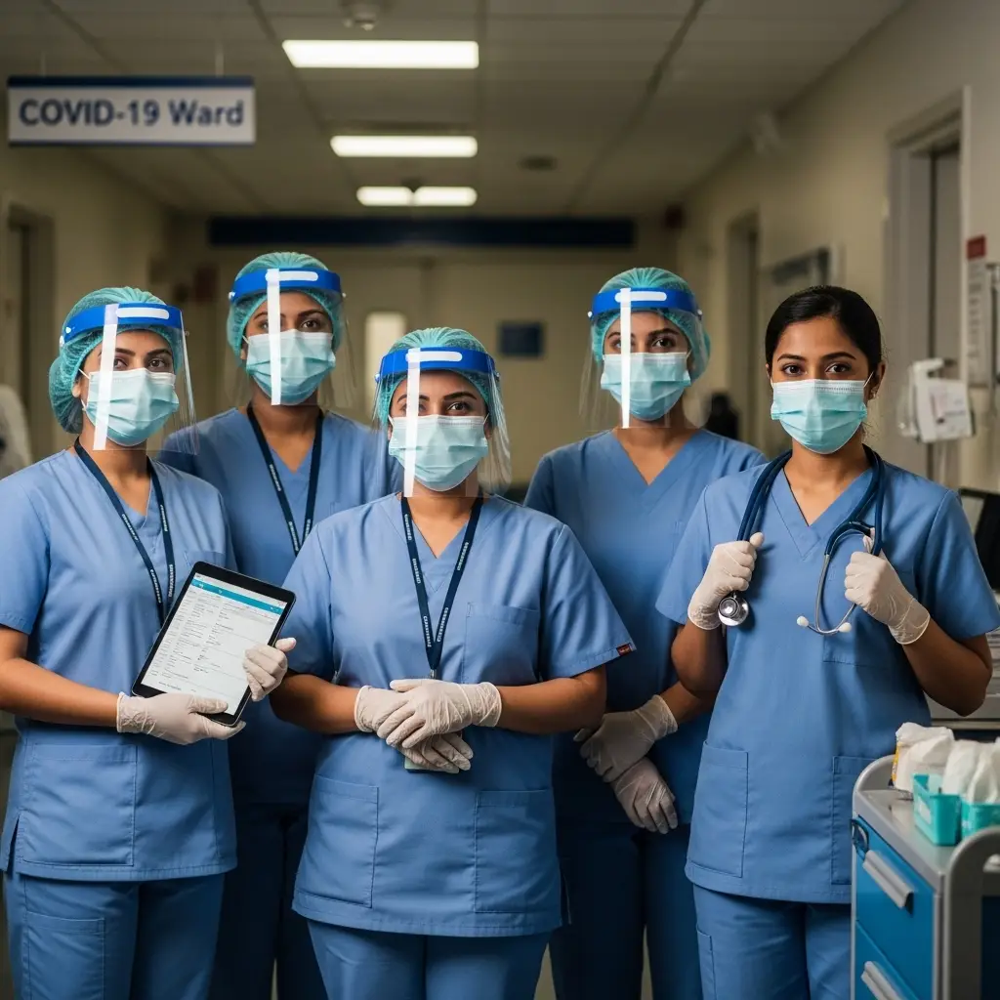
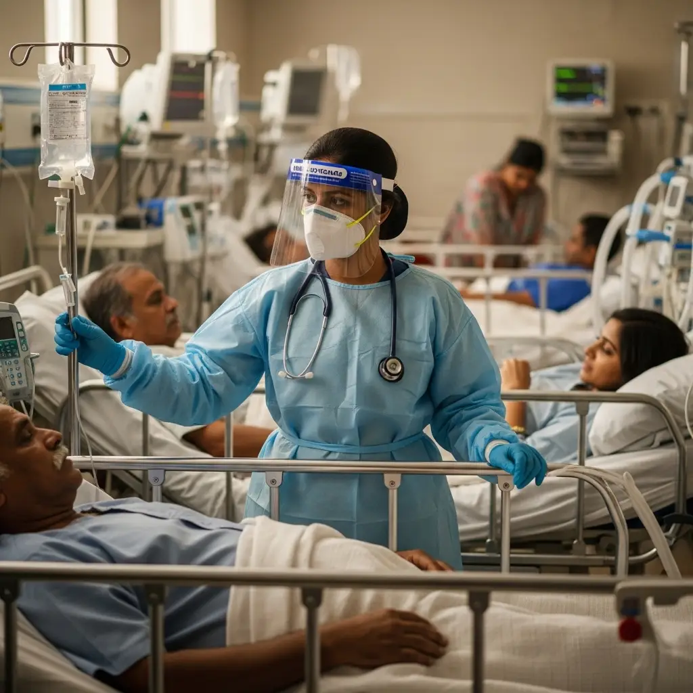

Nursing on the Frontlines: Lessons from the Pandemic
The recent global pandemic served as a crucible for healthcare systems worldwide, unequivocally demonstrating that nurses are the foundational element of global health security. This analysis examines the critical lessons learned and the necessary evolution of nursing education to prepare future healthcare leaders.

The Crucible: Operational Realities During the Crisis
During the apex of the crisis, the operational scope of nursing expanded significantly. Nurses functioned not solely as clinical caregivers, but as systems innovators, primary communicators, and the definitive point of human contact for isolated patients.

Beyond Traditional Clinical Care
Nurses managed complex ventilator protocols and experimental pharmacotherapy while simultaneously facilitating digital end-of-life communications for families. They executed rapid triage, disseminated public health education, and developed ad-hoc protocols to manage unprecedented patient surges. This period fundamentally redefined the public perception of nursing, highlighting it as a highly skilled, autonomous profession requiring decisive leadership under extreme duress.
Four Critical Directives for the Future of Healthcare
The systemic vulnerabilities exposed by the pandemic necessitate structural adaptations in both healthcare delivery and nursing education to ensure preparedness for future global health challenges.
1. The Imperative of Robust Public Health Infrastructure
The crisis illustrated the limitations of a strictly hospital-centric healthcare model. A resilient public health infrastructure—prioritizing community nursing, epidemiological surveillance, and proactive health education—is the primary defense mechanism against widespread contagion.
"Investment in the nursing workforce is an investment in the health of nations. Strengthening primary health care must be a top priority for all countries, with a focus on ensuring nurses can work to their full scope of practice."
- World Health Organization (WHO)
2. Mental Health Resilience as a Core Clinical Competency
The profound psychological impact on frontline personnel demonstrated that mental resilience is a critical operational competency, not a secondary attribute. Systemic burnout must be mitigated through comprehensive psychological training and institutional support structures.
"The COVID-19 pandemic has had a devastating effect on the mental health of nurses... The International Council of Nurses (ICN) calls for the protection and support of nurses to be a priority for governments."
- International Council of Nurses (ICN)
3. The Integration of Digital Literacy and Telehealth
The accelerated implementation of telehealth, remote patient monitoring, and health informatics established digital literacy as a mandatory clinical skill. Future nursing professionals must possess proficiency in data management and technological interfaces to ensure continuity of care and optimal resource allocation during systemic disruptions.
4. Mastery of Infection Control Protocols
The pandemic elevated the principles of infection control to a matter of global security. For nursing professionals, it reinforced that rigorous adherence to medical asepsis, sterilization procedures, and the correct utilization of Personal Protective Equipment (PPE) constitutes the absolute baseline for patient and provider safety.
The Evolution of Modern Nursing Education
The future of nursing education relies on developing graduates who possess clinical excellence, psychological resilience, and leadership capabilities. Modern curricula are adapting to these requirements through several key initiatives:
- Integrated Community Health: Academic programs now embed Community Health Nursing early in the curriculum, preparing students for diverse operational settings and establishing a strong foundation in public health principles.
- Focus on Psychological Wellness: Mental Health Nursing is prioritized as a core subject, equipping students with the diagnostic tools to address patient psychological needs while fostering their own mental resilience.
- Emphasis on Health Informatics: Comprehensive training in healthcare technology and electronic health records (EHR) is standard, ensuring graduates are fully prepared for a digitally integrated healthcare environment.
- High-Fidelity Simulation Training: Prior to clinical deployment, students achieve procedural mastery in advanced simulation laboratories. These facilities allow for the safe, repetitive practice of critical protocols, including infection control and emergency response.
Simulation-Based Reality Training
Within our advanced simulation environments, students transcend theoretical learning to develop procedural muscle memory. This empirical training methodology ensures that responses to real-world clinical crises are immediate, competent, and evidence-based.

A Call to the Next Generation of Healthcare Leaders
The global community recognizes that nurses are autonomous, critical thinkers and the structural foundation of the healthcare continuum. While future challenges are inevitable, the capacity to enact systemic change has never been more pronounced.
Pursuing a career in nursing is a commitment to leadership, patient advocacy, and global health security. The healthcare sector requires professionals equipped with intellectual rigor, clinical courage, and unwavering compassion. The opportunity to lead is now.